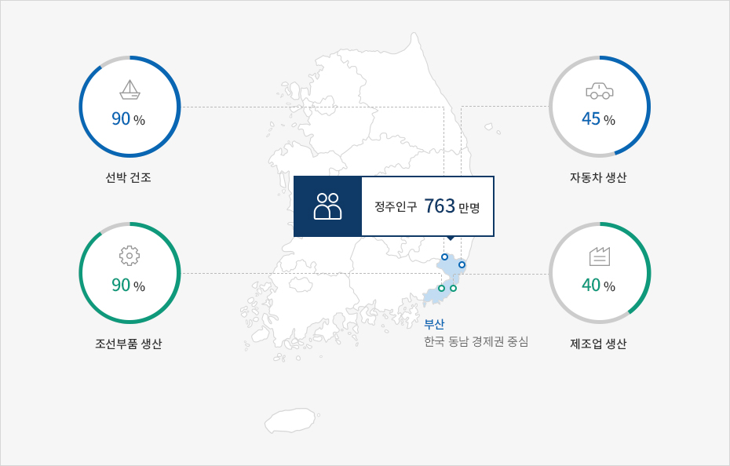
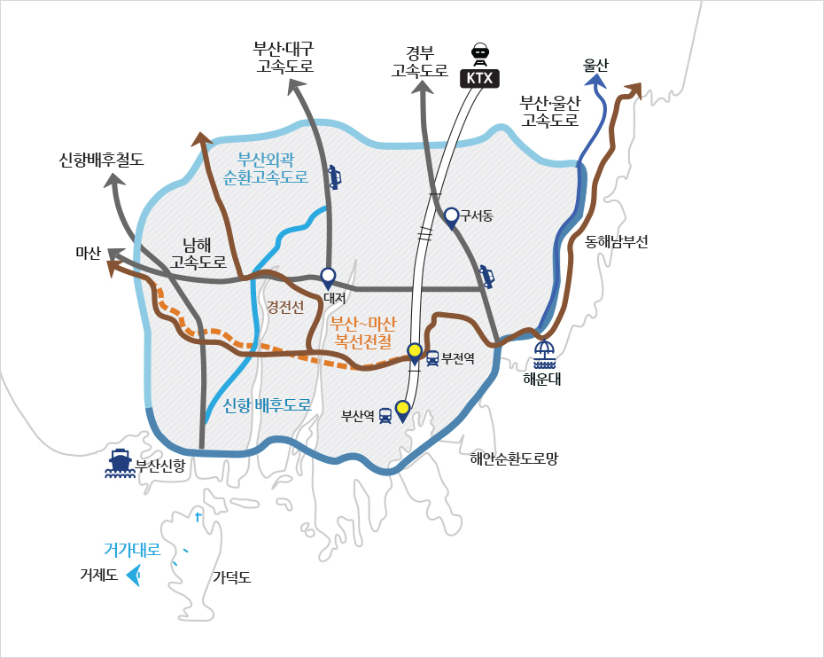

기업하기 좋은 도시
- Home
- 투자 강점
- 기업하기 좋은 도시
동남 경제권의 중심지
부산은 동남 경제권의 물류∙경제 중심지입니다. 한국의 산업 허브로서 763만 명의 정주인구를 가지고 있는 동남 경제권에서는 선박건조의 90%, 조선부품 생산의 90%, 자동차 생산의 45%, 제조업 생산의 40%가 이루어집니다.



※ 출처 : 2013 <부산, 서비스산업의 허브>
최적의 교통인프라
국내와 해외를 아우르는 육상, 항공, 해상 교통체계를 갖춘 부산은 해양과 대륙을 잇는 최적의 교통인프라를 통해기업의 교통 편리성 제고, 물류비용절감 혜택 등을 제공하고 있습니다.


우수한 인적자원 및 교육여건
부산은 360만 인구와 경쟁력 있는 교육 인프라를 바탕으로 훌륭한 인적자원을 보유하고 있습니다. 25개의 대학과 334개의 연구기관을 비롯하여 Fraunhofer 응용기술연구소, INI-GraphicsNet, Rolls-Royce 대학기술센터, Lloyd선급재단 우수연구센터, APEC기후센터 등 세계유수의 R&D센터들이 부산에 상주해 있습니다.

※ 출처 : 2012년 기준